ARES-4: Modular 4-DOF Robot Arm
A modular robot arm, built for many tasks. Its tools change by hand with a twist, and a browser dashboard lets you set up and run new jobs. We put it to the test on fully automatic LEGO sorting: 48 of 50 bricks sorted.
- Design
- SolidWorks · Maple
- Electronics
- KiCad · ESP32-S3
- Software
- Python · FastAPI · camera vision
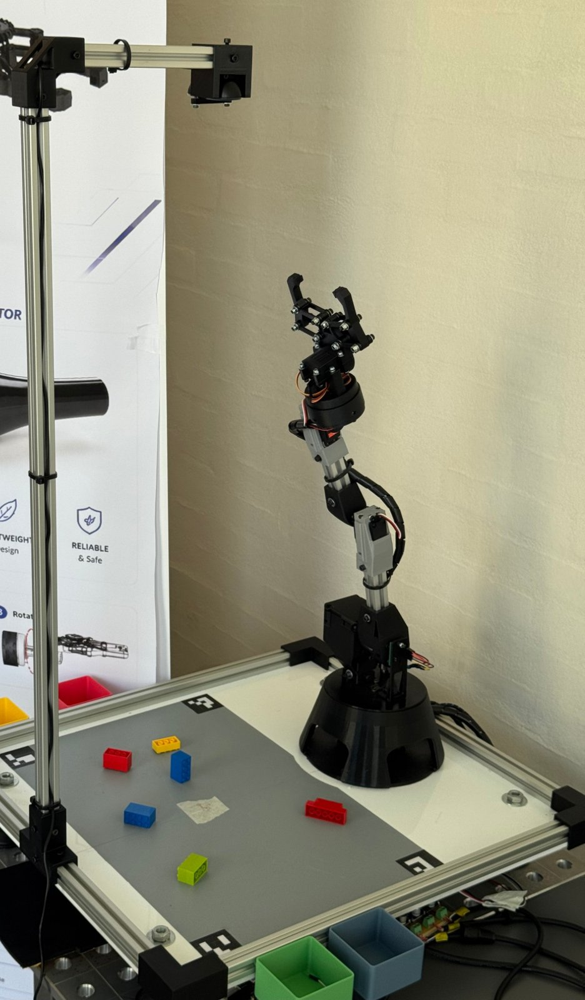
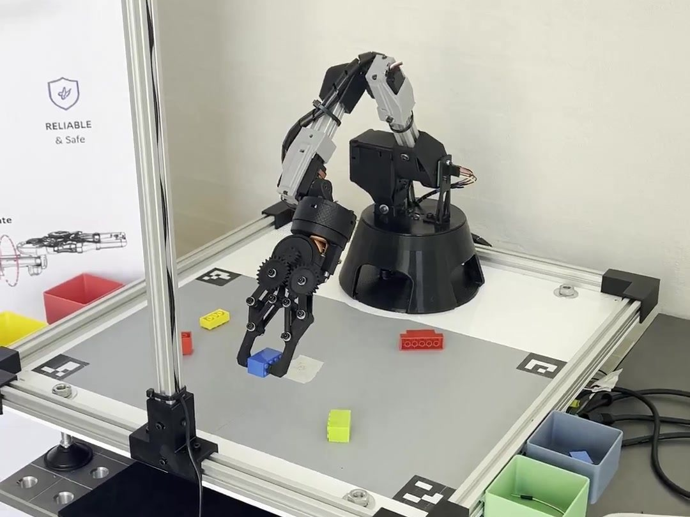
Build a modular robot arm that isn't tied to one task. Tools swap through a quick-change interface, and the software lets the user define, preview and run new tasks. Targets came from real tasks: about 500 g payload, and enough accuracy to pick up LEGO bricks.
In a team of three, I drove the mechanical design, the electronics and the software: from motor sizing and CAD to the KiCad wiring, ESP32-S3 firmware, kinematics and the control dashboard.
bricks detected, picked and sorted without help (96 %) in the LEGO-sorting test. Carried a payload of about 500 g.
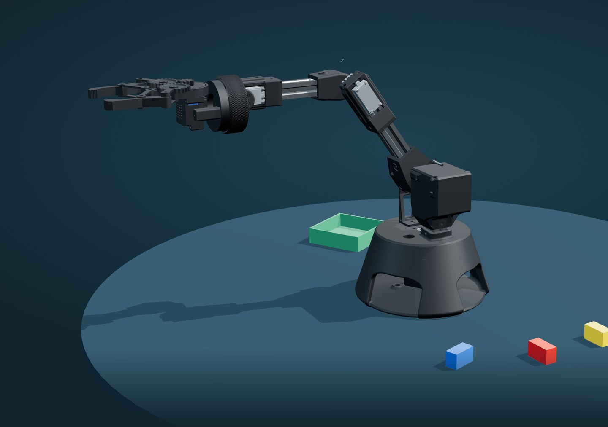
Four joints, each its own module
Printed joint adapters on 2020 aluminium links, so any joint can be changed on its own, and a tool interface at the wrist that takes a gripper or an electromagnet.
Strong enough at full reach
Fully stretched out and accelerating, the arm needs about 4 Nm at the shoulder. A stepper with a 27:1 gearbox gives about 7 Nm peak, and our own torque test confirmed it.
Light up top, strong at the base
Servos at the elbow and wrist keep the mass close to the base, so the steppers only carry what they must and the arm stays quick.
Swap tools by hand
Twist the gripper off its knurled ring and it lifts away. Push the next tool on and twist to lock: lugs catch under the lip and a sideways pogo connector closes, so power reaches the tool without a cable or a screwdriver.
Sorting on its own
The camera finds a brick, inverse kinematics plans the pick, the parallel jaws close on it and the arm drops it in its bin, then repeats until the table is clear, with no one touching it.
Key design decisions
- Motor sizing loop. Worst-case torque (arm fully extended and accelerating), iterating reach, acceleration and motor mass until it converged: about 500 mm reach and about 4 Nm at the shoulder. That called for a stepper with a 27:1 gearbox (about 7 Nm peak), which we checked with our own torque test.
- Torque where it's needed. Steppers at the base and shoulder; light servos at the elbow and wrist to keep mass off the arm.
- Aluminium links, printed joints. 2020 extrusion links with custom printed joint adapters: stiffer than printed links, far less print time, and each joint module can be changed on its own.
- Quick-swap tools. Align, insert, rotate, lock: the same arm runs a parallel gripper or an electromagnet without tools. Pogo pins in the interface connect the tool's power automatically when it locks.
- Modular electronics. Separate perfboard modules so faults can be isolated. I moved from DRV8825 to TB6600 drivers for robustness and added a transistor module so the 3.3 V ESP32-S3 can drive their 5 V inputs.
- Known limits. Backlash limits the arm's precision; the next step is closed-loop control on every joint.
- Encoder-corrected shoulder. Open-loop steppers, plus an AS5048A absolute encoder that measures the real shoulder angle after each move and corrects it.
Vision, kinematics and a browser dashboard
The PC runs DH forward kinematics, Jacobian inverse kinematics, trajectory planning and camera-based colour detection; the ESP32-S3 drives the hardware. Sorting is fully automatic: the camera finds a brick, inverse kinematics plans the pick, the arm grips it and drops it in the bin for its colour, and the loop repeats until the table is clear, with no input from anyone. When you set up a new move by hand, the dashboard previews it as a ghost arm and path before it runs. The video shows a full sorting run.
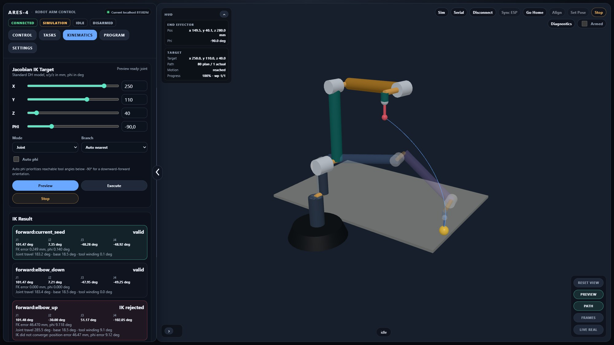
From the engineering report
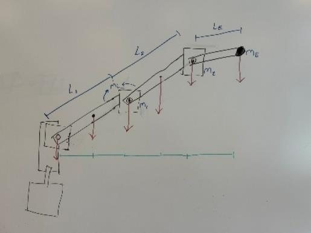
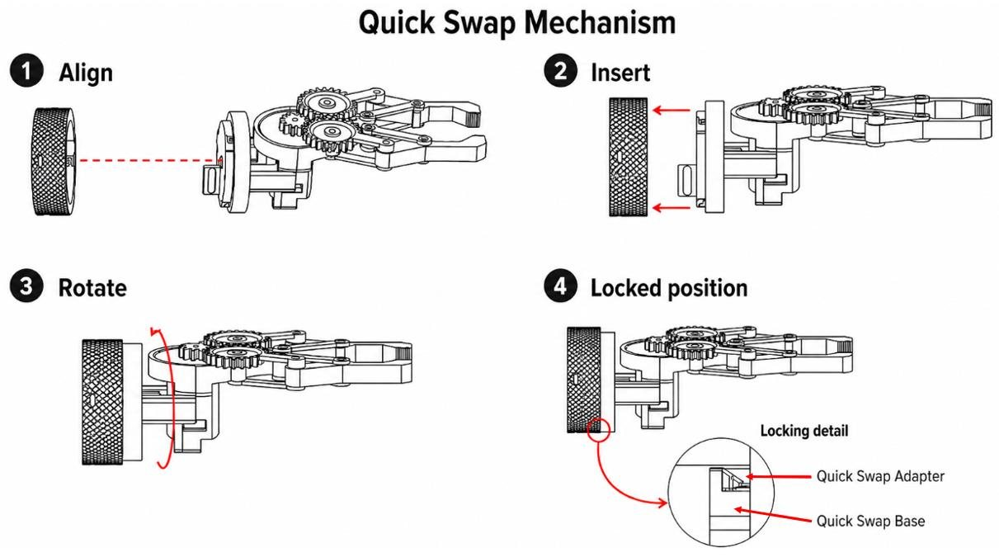
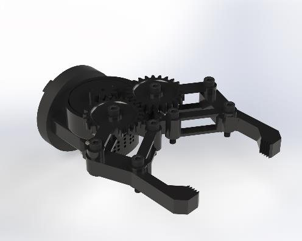
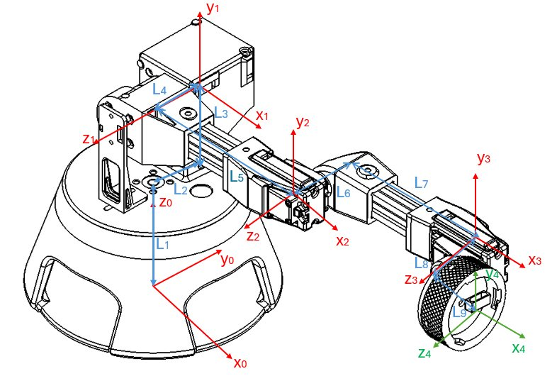
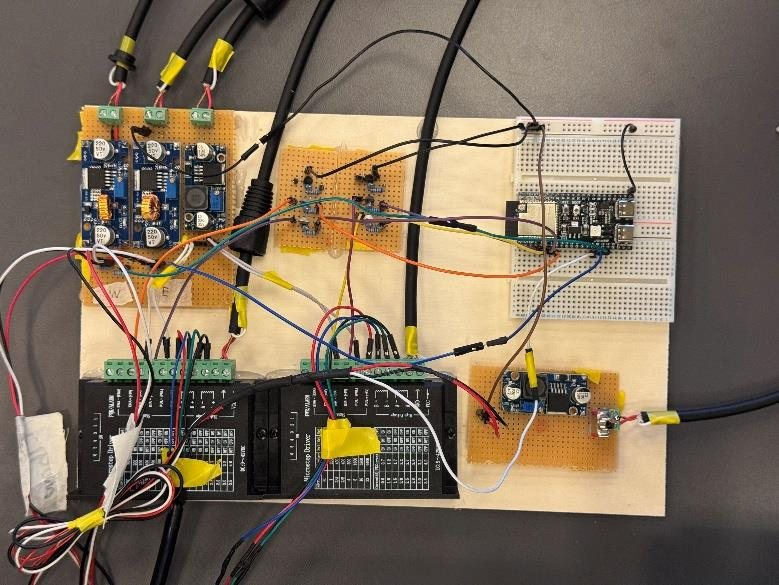
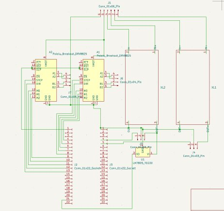
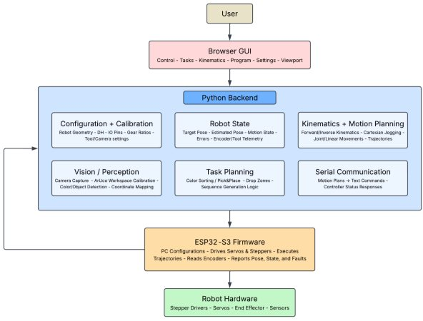
Cycloidal QDD Actuator
A printable robot joint, designed from scratch to be backdrivable. A low-ratio cycloidal drive for a drone motor, the quasi-direct-drive (QDD) kind of actuator used in legged robots, made to be printed at home from few bought parts.
- Design
- SolidWorks · cycloid geometry
- Drive
- BLDC motor · FOC (planned) · bearing selection
- Build
- FDM printing
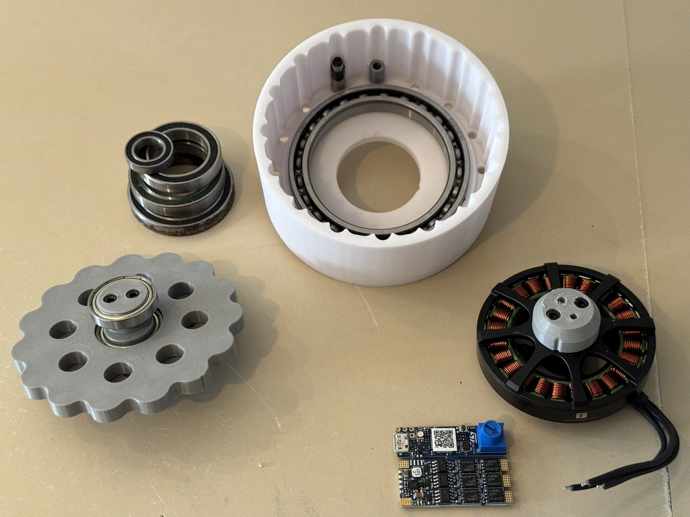
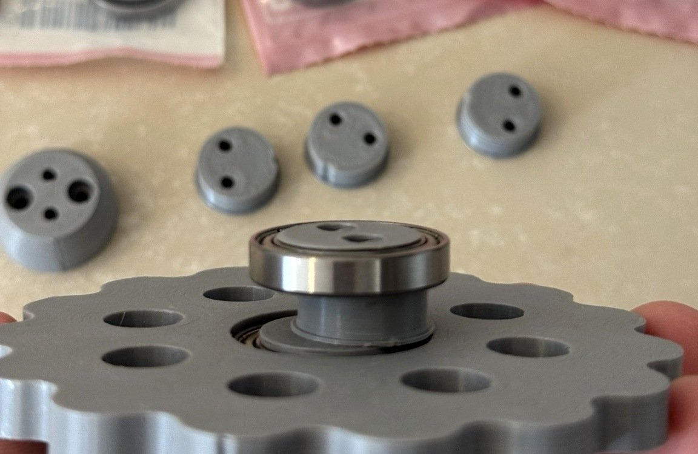
A backdrivable, controllable actuator for robotics: light, compact and 3D-printable on a home FDM printer, with as few off-the-shelf parts as possible and a low cost.
Independent project: concept, calculations, all of the SolidWorks design, printing and fitting the parts.
The current 15:1 design is complete in CAD. The first prototype was printed and fitted with real bearings. Next: fit samples, assembly and hand-turn tests.
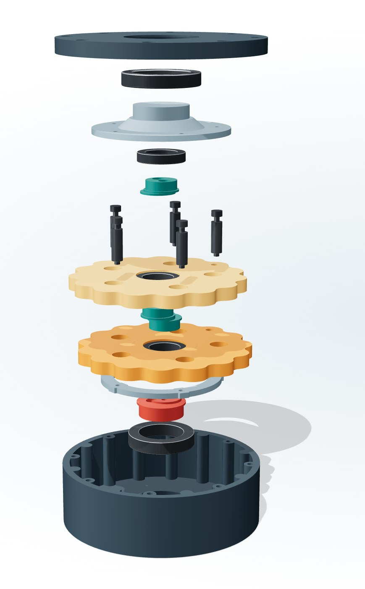
A 15:1 cycloid for a drone motor
A 15:1 cycloidal stage in a printed housing, sized for a T-Motor MN6007 II outrunner. The ratio is low on purpose: the aim is a joint that stays backdrivable and quick to respond.
Printed, with a few bought parts
Almost everything you see is designed to be printed at home, around a few bought parts such as the motor and the bearings.
Fifteen turns in, one turn out
The eccentric shaft swings both discs around the lobed housing. Each input turn walks a disc back by one lobe, so the output turns once for every 15 turns of the motor.
From printed prototype to current design
The first prototype was printed and fitted with real bearings to check fits against the CAD. This design builds on it; next come fit samples, assembly and hand-turn tests.
Key design decisions
- Low ratio on purpose. A quasi-direct drive needs a low reduction to stay backdrivable and responsive. This design is 15:1, inside my 12–16:1 target range.
- Drone motor, not a stepper. An outrunner BLDC (T-Motor MN6007 II) with a field-oriented-control board, instead of a NEMA 17 or an expensive integrated servo.
- Test the fit, not just the geometry. The first prototype's disc and housing were printed early to check real bearing fits and interfaces against the CAD.
- No ring pins. The discs roll directly against a profile in the printed housing. Printed sleeves over screws had left seam lines that caused friction.
- Two phase-shifted discs. Two discs on the eccentric shaft, phase-shifted against each other.
- Serviceable eccentric shaft. Three pieces clamped with M3 screws and nuts, so the 6803 bearings fit inside the discs. The output carrier runs on 6805 and 61806 bearings.
Wall-Mounted QR Scanner
Prototype, field evaluation, redesign. I designed the hardware for a wall-mounted check-in terminal, installed it, evaluated it in real use and redesigned it from what we found. V2 is in service every week.
- Design
- SolidWorks
- Hardware
- Raspberry Pi 3B+ · GM60 scanner · display
- Build
- FDM printing · assembly and testing
- 01PrototypeV1 designed, printed and installed
- 02Field evaluationIssues and real-world use logged on the wall
- 03RedesignV2, in service every week
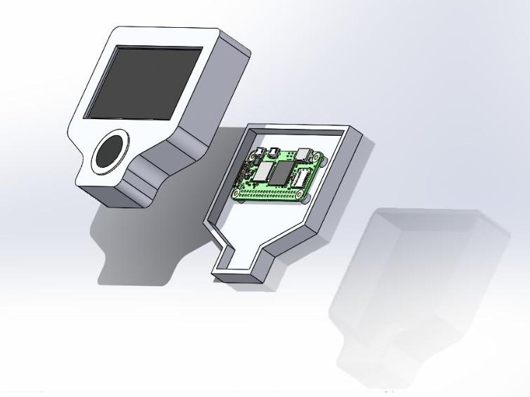
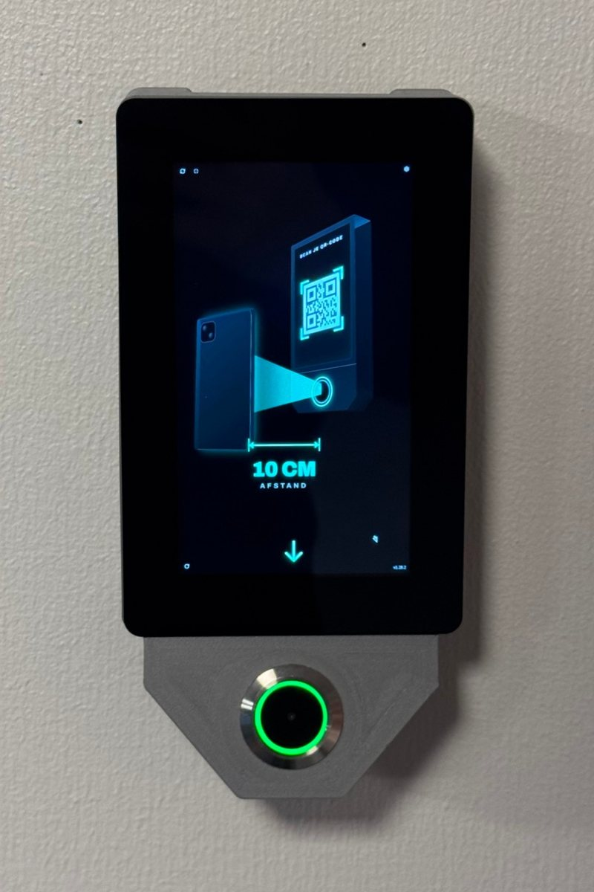
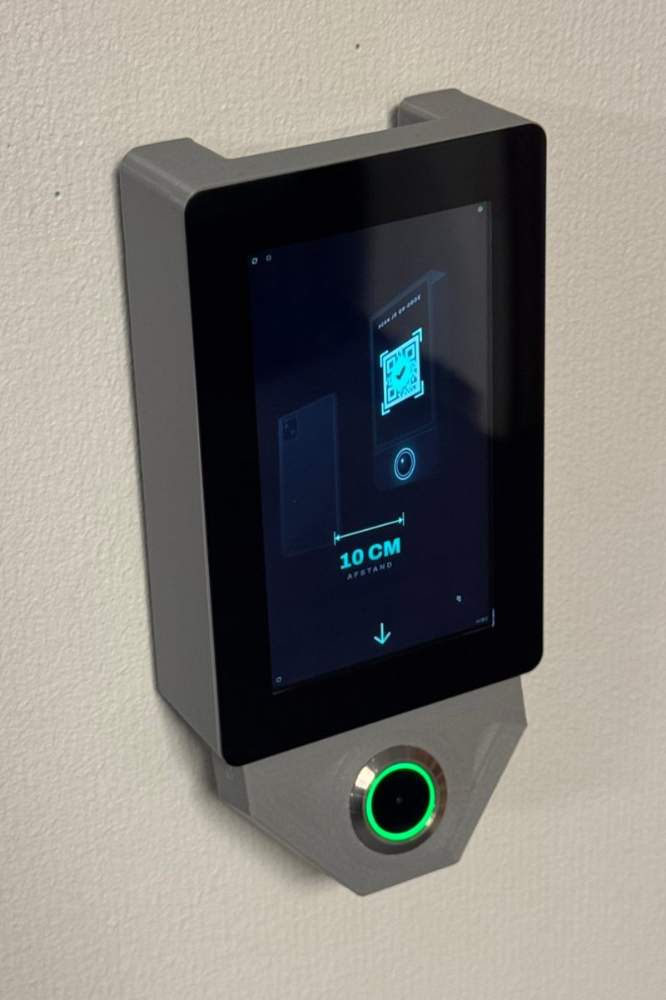
- A display that stays responsive
V1’s screen ran over the GPIO pins and was slow and often froze. V2 uses the official 5-inch Raspberry Pi Touch Display 2 on the Pi’s dedicated display connector, and it is larger.
- Readable at a glance
Most users are older, so the terminal has to explain itself. A larger screen and a cleaner, easier-to-read front do that.
- An unmistakable scan point
The GM60 sits in its own scanner head that projects forward at an angle below the display, so it is obvious where the phone goes.
- Fast, clean installation
A simplified wall mount, with fewer steps to put the unit up.
- Robust in weekly use
Sturdier internal mounting that holds the display, scanner and Raspberry Pi firmly in place.
- Easy to build and service
Packaged around the real parts, with fasteners, clearances, cable routing and assembly access worked out in CAD, so it is quick to assemble and just as quick to open for service.
- Efficient to manufacture
Single-material FDM in light grey PLA with print-efficient geometry. Concept features that could not be made well, such as lighting above the scanner and frosted glass, were cut.
An association needed a fixed QR check-in station: a scanner, a Raspberry Pi and a display in one compact unit on the wall, robust enough for weekly use.
I designed and built the hardware: the SolidWorks enclosure and wall mount, the packaging of display, GM60 scanner and Raspberry Pi, printing, assembly and testing. The application software was handled separately.
V2 answers every issue found in V1’s field evaluation and is far cleaner. It is in service at the association every week.
Motor-Driven Syringe Pump
A printed syringe pump within 99–101 % of set flow. A modular pump that pushes and pulls, takes 6–24 mL syringes and turns stepper rotation into precise plunger travel. I modelled it, built it and measured it.
- Design
- SolidWorks
- Build
- FDM printing · laser cutting
- Control and test
- Arduino · calibration · flow measurement
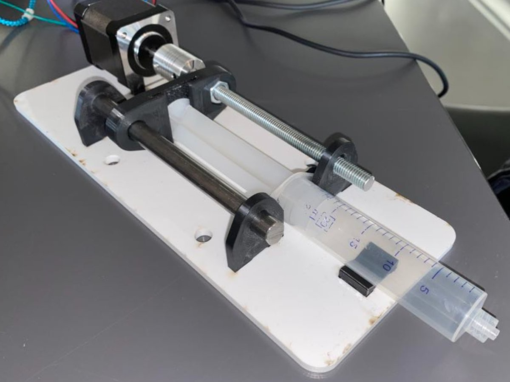
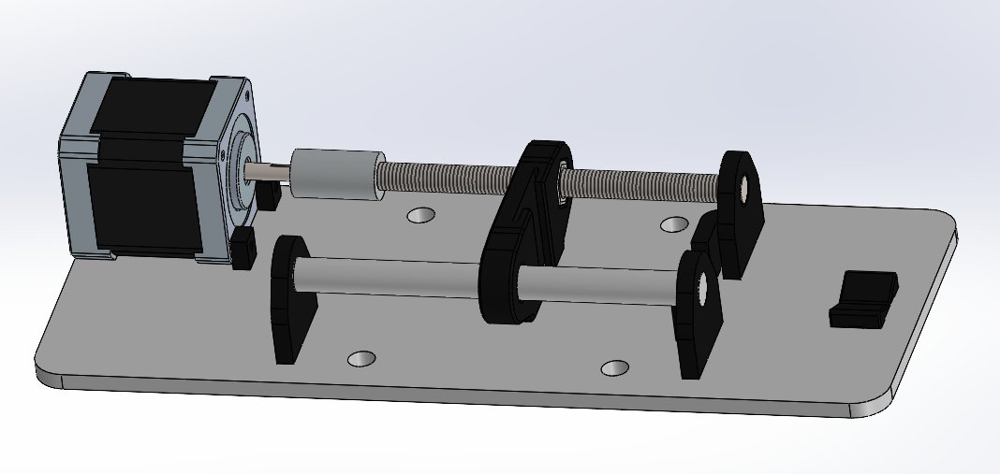
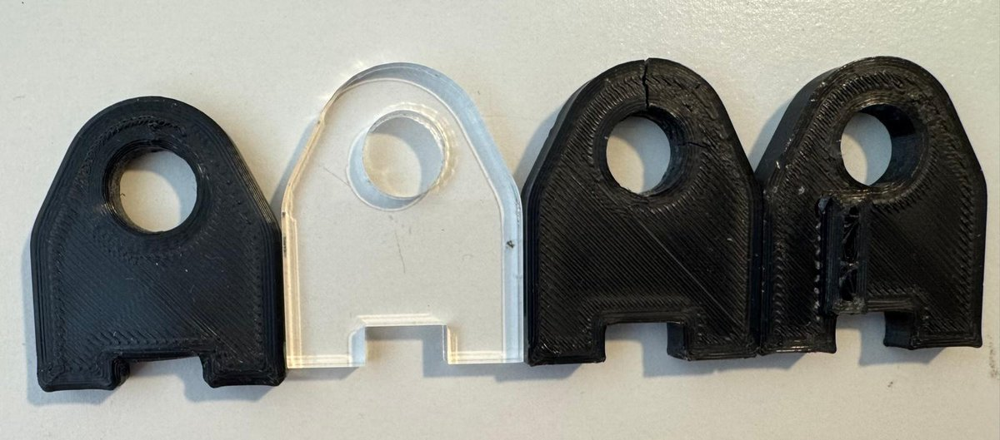
Build a modular syringe pump that can both push and pull, delivers programmed flow rates with good linearity, and takes different syringe sizes.
I did the CAD modelling (with feedback from the group), built the physical prototype and ran the data collection and processing.
of the set flow rate with 6, 12 and 24 mL syringes at 1–5 mL/min, at 1/16 and 1/32 microstepping. 3 repeats per point on a 0.01 g scale.
Key design decisions
- Lead-screw drive. A NEMA 17 stepper turns an M8 threaded rod through a flexible aluminium coupling, and a nut in the push plate turns rotation into plunger travel. It's driven by an Arduino and a TB6600 driver.
- Small parts, fast loops. Separate small parts, each printed in under half an hour, instead of days for one large part.
- Clamp that copies a hand. The clamp grips the syringe by its own finger flanges. The four legs were joined into two for stiffness, and it takes syringes up to 22 mm outer diameter.
- Stiffer push plate. Made thicker, with a tighter pocket, against bending under load and play when the direction reverses.
- Stiffer acrylic base. Laser-cut base increased from 3 to 5 mm for firm press fits, with M8 holes on a 25 mm grid for breadboard mounting.
- Full-step failure, and why. In full-step drive the push plate skewed on its guide rods, so the tests ran at 1/16 and 1/32 microstepping.
Test data
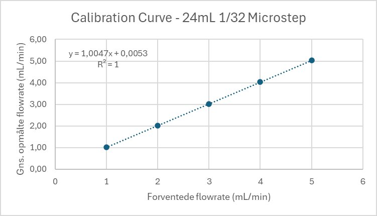
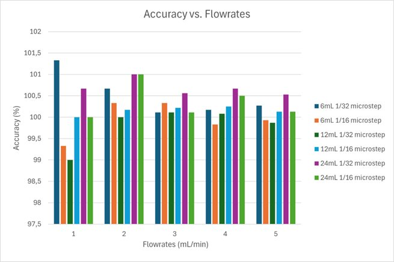
More I've built
Projects that ran for months alongside my studies, each with its own engineering story.
-
Vision-guided nerf turret
A pan/tilt turret that finds a target and fires on its own. A camera on the blaster feeds YOLOv8n in Python on a PC; the target's offset in the image, with a deadband, becomes yaw and pitch commands sent over HC-05 Bluetooth to an Arduino driving two steppers.
Mechanics designed in CAD and printed, with bearings in the joints. My first soldered perfboard. Detection runs at about 20 FPS on a CPU.
-
Bike-powered phone charger
A charger designed to keep a phone charging through stops. A bike-driven generator feeds a buck converter, a supercapacitor buffer (2.7 V, 500 F) and a boost stage to a USB Power Delivery output.
Built with a fellow mechanical engineering student. The drive concept moved from a friction-wheel dynamo towards a chain take-off for robustness. The electrical side was prototyped; the bike integration is still ahead.
-
Table football goalkeeper bot
A robot that plays goalkeeper on a table football table: two degrees of freedom, a belt drive that slides the keeper rod and a second axis that rotates it.
Designed in CAD with structural simulation. I compared steppers, DC motors with encoders and servos for the axes, and evaluated a 500 pulse-per-revolution encoder. Camera-based ball tracking is planned as the next stage.